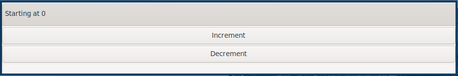
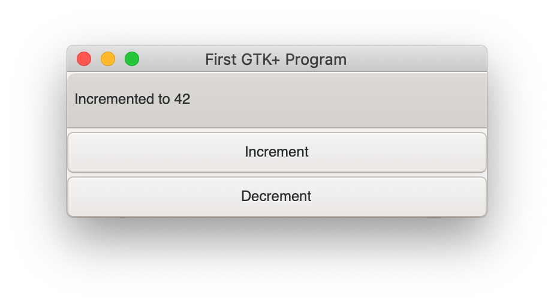

Rust vs GUI Implications of Rust's borrow checking and memory ownership on GUI development (simple case)
I’m neither an experienced Rust programmer nor GTK developer. I don’t even have that much experience with building native GUIs or with system level programming. Hell, I might be the least qualified guy on the internet to write this post. Despite that, on more than just one occasion, I wondered what implications Rust’s static analysis of memory access has on writing GUIs.
I received a ton of constructive and positive feedback on /r/rust. Rust community really proved to be nothing but great. You can find the link to the Reddit comments down bellow. I didn’t expect that much positive feedback and I truly humbled to receive it. I made a few updates based on the discussion:
- Avoiding the use the old project name
GTK+as it’s now called justGTK - Make operations with state truly atomic (thanks JayDepp)
- Mention PopOS’ Firmware Manager and mmstick’s comment and the druid project
GUI development is a special beast. I consider it to be an interesting use-case as the GUI development is usually associated with:
- Threading or Concurrency (or both)
- Long living application state and mutations
- in case of native UI, linking to sh*tload of C/C++ libraries
- imperative, often object oriented, APIs.
I thought it might be interesting to check implications which Rust’s borrow and ownership checker has in those types of applications as clearly, even in the most simple GUI, one simply must run into some complications. That’s exactly what I’m going to do and document here. I’m going to implement the most simple (and useless) GTK application in Rust just for the sake of feeling the pain of fighting the compiler as an inexperienced user.
Boring but Necessary Setup
I’ve chosen GTK only because I’m developing this on Linux and I have a feeling that C lib will probably have better bindings than C++ one would have (QT). First thing we will need to deal with is an installation of all libraries. I’m going to use the nix package manager because it seems to me like the only sane way of managing this. Setup should be compatible across Linux and Mac. If you’re trying to replicate this on Windows, good luck following this.
We’re going to create shell.nix file to define development environment containing all the tools we need.
Note that I’m using nixos-unstable channel myself.
{ pkgs ? import <nixpkgs> {} }:
with pkgs;
mkShell {
buildInputs = [ cargo rustc cairo gtk3 glib pkgconfig ];
}Now, running $ nix-shell should bring us to the bash shell with all the native dependencies including
rustc and cargo installed.
Use cargo to bootstrap the project within nix-shell:
[nix-shell] cargo initto confirm that compilation works, we can run the hello world project generated by cargo.
[nix-shell] cargo run
Compiling rust-gtk-counter v0.1.0 (/home/marek/Projects/rust-gtk-counter)
Finished dev [unoptimized + debuginfo] target(s) in 0.39s
Running `target/debug/rust-gtk-counter`
Hello, world!Because I don’t really have an idea what I’m doing, I’m going to just copy example Cargo.toml.
[package]
name = "rust-gtk-counter"
version = "0.1.0"
authors = ["Marek Fajkus <marek.faj@gmail.com>"]
edition = "2018"
[dependencies.gtk]
version = "0.7.0"
features = ["v3_16"]
[dependencies.gio]
version = ""
features = ["v2_44"]I also recommend running cargo build right away as at this point, it will need to pull deps, do the linking and compilation,
and there is really no point in waiting for all of this later.
UI Code
With help of GTK documentation and rust-gtk documentation, I was able to hack together
world’s most embarrassing interface, yay. I’m just going to put the code here as there is really nothing that
interesting in it. I put all the code to src/main.rs and even main procedure because why the hell not.
extern crate gtk;
extern crate gio;
use std::env::args;
use gtk::prelude::*;
use gio::prelude::*;
use gtk::{Application, ApplicationWindow, Button, Box, Label,};
fn main() {
// The simplest way to initalize new application
let application = Application::new(None, Default::default())
.expect("failed to initialize GTK application");
// UI initialization
application.connect_activate(|app| {
// Window
let window = ApplicationWindow::new(app);
window.set_title("First GTK Program");
window.set_default_size(350, 70);
// Containers
let container = Box::new(gtk::Orientation::Vertical, 3);
// Header
let header = gtk::HeaderBar::new();
let label = Label::new(Some("Starting at 0"));
// Content
let inc_btn = Button::new_with_label("Increment");
let dec_btn = Button::new_with_label("Decrement");
// Compose piece together
header.add(&label);
container.add(&header);
container.add(&inc_btn);
container.add(&dec_btn);
window.add(&container);
// Display all widgets
window.show_all();
});
// Passing arguments to the app
application.run(&args().collect::<Vec<_>>());
}And this is how the app looks like when I run $ cargo run.
I’m using tiling window manager (XMonad) so this will probably
look slightly different on most other desktops.

Adding Actions
The application is not doing much. It’s doing exactly nothing (other than rendering useless window with useless widgets). Let’s try doing the most useless thing in the world like changing the title whenever we click on one of buttons.
Let’s just try what seems like the most simple way of doing this - changing content section to something like this:
// Content
let inc_btn = Button::new_with_label("Increment");
inc_btn.connect_clicked(|_| {
label.set_label("Incremented");
});
let dec_btn = Button::new_with_label("Decrement");
dec_btn.connect_clicked(|_| {
label.set_label("Decremented");
});[nix-shell] cargo run
error[E0373]: closure may outlive the current function, but it borrows `label`, which is owned by the current function
--> src/main.rs:31:33
|
31 | inc_btn.connect_clicked(|_| {
| ^^^ may outlive borrowed value `label`
32 | label.set_label("Incremented");
| ----- `label` is borrowed here
|
note: function requires argument type to outlive `'static`
--> src/main.rs:31:9
|
31 | / inc_btn.connect_clicked(|_| {
32 | | label.set_label("Incremented");
33 | | });
| |__________^
help: to force the closure to take ownership of `label` (and any other referenced variables), use the `move` keyword
|
31 | inc_btn.connect_clicked(move |_| {
| ^^^^^^^^
....Of course… We don’t have GC to “track the references” to label for us so we need to somehow make sure it’s available for
as long as we need to use that reference. That is whenever the connect_clicked closure will evaluate.
But we have a hint about using move to transfer ownership of label so let’s just add it.
// Content
let inc_btn = Button::new_with_label("Increment");
inc_btn.connect_clicked(move |_| {
label.set_label("Incremented");
});
let dec_btn = Button::new_with_label("Decrement");
dec_btn.connect_clicked(move |_| {
label.set_label("Decremented");
});And we get another error.
[nix-shell] cargo run
Compiling rust-gtk-counter v0.1.0 (/home/marek/Projects/rust-gtk-counter)
error[E0382]: use of moved value: `label`
--> src/main.rs:35:33
|
27 | let label = Label::new(Some("Starting at 0"));
| ----- move occurs because `label` has type `gtk::Label`, which does not implement the `Copy` trait
...
31 | inc_btn.connect_clicked(move |_| {
| -------- value moved into closure here
32 | label.set_label("Incremented");
| ----- variable moved due to use in closure
...
35 | dec_btn.connect_clicked(move |_| {
| ^^^^^^^^ value used here after move
36 | label.set_label("Decremented");
| ----- use occurs due to use in closureMaybe obviously, we can’t simply move ownership to multiple places. But maybe we can create copy of label reference for each button like this:
// Content
let inc_btn = Button::new_with_label("Increment");
{
let label_clone = label.clone();
inc_btn.connect_clicked(move |_| {
label_clone.set_label("Incremented");
});
}
let dec_btn = Button::new_with_label("Decrement");
{
let label_clone = label.clone();
dec_btn.connect_clicked(move |_| {
label_clone.set_label("Decremented");
});
}I’m using blocks to create the nested namespace so I don’t have to be that creative with naming. But more importantly, the code above compiles and even works!
Some might expect that this code won’t work as we create independent clones of gtk::Label.
I believe this type (as any other Widget) is just a reference to some GTK object so
cloning it means creating just another reference pointing to the same GTK runtime thing.
You can try to add the same thing or a clone of the same thing multiple times to the window.
It won’t work the second time and print runtime warning to the stderr.
(rust-gtk-counter:16318): Gtk-WARNING **: 17:54:30.775: Attempting to add a widget with type GtkLabel to a container of type GtkBox, but the widget is already inside a container of type GtkHeaderBar, please remove the widget from its existing container first.Adding the State
Now, in order to raise our app from the absolute bottom of uselessness to just a bottom of it, we will need to introduce some state. And what is better than good old integer. And since we’re not building just any stupid application which does nothing, and thus can be implemented in a language like Haskell, we just reach for the only enterprise approved technique - the mutation.
Let’s be naive and just add our mutable state to the app for instance somewhere here…
// Containers
let container = Box::new(gtk::Orientation::Vertical, 3);
// State
let mut counter = 0;…and mutate it in handlers. I’m doing so only for increment button for now, why I’m doing so will be more apparent later on.
// Content
let inc_btn = Button::new_with_label("Increment");
{
let label_clone = label.clone();
inc_btn.connect_clicked(move |_| {
counter += 1;
label_clone.set_label("Incremented");
});
}Boom! The compiler hates us again:
[nix-shell] cargo run
error[E0594]: cannot assign to `counter`, as it is a captured variable in a `Fn` closure
--> src/main.rs:37:17
|
37 | counter += 1;
| ^^^^^^^^^^^^ cannot assign
|
help: consider changing this to accept closures that implement `FnMut`
--> src/main.rs:36:37
|
36 | inc_btn.connect_clicked(move |_| {
| _____________________________________^
37 | | counter += 1;
38 | | label_clone.set_label("Incremented");
39 | | });
| |_____________^And this time with a bit trickier error it seems.
I’m honestly not sure what compiler’s help is trying to tell us to do but I think it might be a good idea to encapsulate our mutation in something perhaps. After some digging in documentation I’ve found std::sync::atomic which seems like it might be a good tool for the job. There is even AtomicIsize but since it looks like this will make our “state management” a bit more verbose, let’s try to decouple it.
We can also remove our state : i32 as this won’t take us anywhere it seems.
We’re still in the main.rs (because I can’t import and I’m lazy).
In my case, I’m going to put this above the main procedure.
use std::sync::atomic::{AtomicIsize, Ordering};
struct Counter(AtomicIsize);
impl Counter {
fn new(init: isize) -> Counter {
Counter(AtomicIsize::new(init))
}
fn increment(&self) -> isize {
let old = self.0.fetch_add(1, Ordering::SeqCst);
old + 1
}
}As you can see, we’re doing bunch of interesting things here. The essential idea is to use atomic operations to alter the state. If you’re interested in details, I recommend you study the documentation of std::sync::atomic. Now it’s a time to integrate our glorified integer into application starting with initialization of counter value.
// Containers
let container = Box::new(gtk::Orientation::Vertical, 3);
// State
let counter = Counter::new(0);And of course, click handler closure:
// Content
let inc_btn = Button::new_with_label("Increment");
{
let label_clone = label.clone();
inc_btn.connect_clicked(move |_| {
let val = counter.increment();
label_clone.set_label(&format!("Incremented to {}", val));
});
}We also put the actual value into the label when we’re at it. And since this works great, we go and extend this to work with decrement button as well.
First, the new procedure to decrement the value:
fn decrement(&self) -> isize {
let old = self.0.fetch_sub(1, Ordering::SeqCst);
old - 1
}and then use it in decrement button clicked closure:
let dec_btn = Button::new_with_label("Decrement");
{
let label_clone = label.clone();
dec_btn.connect_clicked(move |_| {
let val = counter.decrement();
label_clone.set_label(&format!("Decremented to {}", val));
});
}But wait what?
Compiling rust-gtk-counter v0.1.0 (/home/marek/Projects/rust-gtk-counter)
error[E0382]: use of moved value: `counter`
--> src/main.rs:66:37
|
48 | let counter = Counter::new(0);
| ------- move occurs because `counter` has type `Counter`, which does not implement the `Copy` trait
...
58 | inc_btn.connect_clicked(move |_| {
| -------- value moved into closure here
59 | let val = counter.increment();
| ------- variable moved due to use in closure
...
66 | dec_btn.connect_clicked(move |_| {
| ^^^^^^^^ value used here after move
67 | let val = counter.decrement();
| ------- use occurs due to use in closure
error: aborting due to previous errorThere is another problem with moving the value but it seems we might have a chance to fix it by simply
deriving the Copy instance for our Counter struct, let’s see.
#[derive(Copy)]
struct Counter(AtomicIsize);and try to compile it…
[nix-shell] cargo run
Compiling rust-gtk-counter v0.1.0 (/home/marek/Projects/rust-gtk-counter)
error[E0204]: the trait `Copy` may not be implemented for this type
--> src/main.rs:11:10
|
11 | #[derive(Copy)]
| ^^^^
12 | struct Counter(AtomicIsize);
| ----------- this field does not implement `Copy`
error: aborting due to previous errorNot that surprising. Our atomic type doesn’t implement Copy.
This won’t take us anywhere, let’s try the last resort - the documentation.
Luckily, std lib offers this reference counting primitive called std::sync::Arc which seems to offer the semantics we need.
The type Arc<T> provides shared ownership of a value of type T, allocated in the heap. Invoking clone on Arc produces a new Arc instance, which points to the same value on the heap as the source Arc, while increasing a reference count. When the last Arc pointer to a given value is destroyed, the pointed-to value is also destroyed.
We obviously want to point to the same memory if we want to be decrementing the same value we’re incrementing and reference counting will make sure this shared mutable state is available as long as it’s needed by anything just like if we had a GC.
First, we need to change the definition of the counter variable:
// State
use std::sync::Arc;
let counter = Arc::new(Counter::new(0));so we can clone the counter in both closures (even though technically, cloning it in just one of them should be enough).
// Content
let inc_btn = Button::new_with_label("Increment");
{
let label_clone = label.clone();
let counter_clone = counter.clone();
inc_btn.connect_clicked(move |_| {
let val = counter_clone.increment();
label_clone.set_label(&format!("Incremented to {}", val));
});
}
let dec_btn = Button::new_with_label("Decrement");
{
let label_clone = label.clone();
let counter_clone = counter.clone();
dec_btn.connect_clicked(move |_| {
let val = counter_clone.decrement();
label_clone.set_label(&format!("Decremented to {}", val));
});
}And our awesome application compiles and runs again!
Additional Cleaning
This is really all the important stuff but there are some additional cosmetic details I just must do because of my OCD. So just quickly.
First, the code. We should really read the initial state as well so let’s add the simple getter.
fn get(&self) -> isize {
self.0.load(Ordering::SeqCst)
}And use it to display the initial title…
// Header
let header = gtk::HeaderBar::new();
let label = Label::new(Some(&format!("Starting at {}", counter.get())));And because we want everyone to be able to enjoy our glorious application, we can provide
nix based build and installation. Create the new file called default.nix (or some prefer release.nix).
let
pkgs = (import <nixpkgs> {}).fetchFromGitHub {
owner = "NixOS";
repo = "nixpkgs-channels";
rev = "b5f5c97f7d67a99b67731a8cfd3926f163c11857";
# nixos-unstable as of 2019-07-24T18:57:18-05:00
sha256 = "1m9xb3z3jxh0xirdnik11z4hw95bzdz7a4p3ab7y392345jk1wgm";
};
in
with (import pkgs {});
rustPackages.rustPlatform.buildRustPackage rec {
name = "rust-gtk-counter-${version}";
version = "0.1.0";
src = ./.;
cargoSha256 = "0i4px1k23ymq7k3jp6y5g7dz0ysjzwrqqxfz4xg399y7zg5wwwhr";
nativeBuildInputs = [ pkgconfig ];
buildInputs = [ cairo gtk3 glib pkgconfig ];
}Unlike in shell.nix, where we used the system’s global <nixpkgs>, here we use global ones only
for fetchFromGitHub and fetch exact revision of nixpkgs to make sure that we get the same version of
dependencies in the future.
Now we can use (even outside of nix-shell) $ nix-build to build the whole project (and likely compile all the C as well as Rust from source)
which will produce symlink named result in local directory pointing to compiled version of our package in nix-store linked
to correct dependencies. $ ./result/bin/rust-gtk-counter should start the app. We should also add result to our .gitignore.
You can even install the app to your nix-env with $ nix-env -if .
because one never knows when (s)he will need to count from zero to some number. The app will then be installed as rust-gtk-counter.
Since I have Mac as well, I can try that nix-build is working on MacOS as expected.

Enjoy glib compile time if you try this.
Conclusion
I have to admit that I expected this whole process to be even slightly more challenging for someone with so little experience with both Rust and GTK as me. It was not all roses and rainbows though. I’ve definitely spent a lot of time reading documentation, trying to figure out what to use and how in order to get to the desired outcome. Also, our application is miles away from being advanced or even useful.
I have to admit that Rust brings some reasonable trade-offs when it comes to building a GTK application. This doesn’t mean that it’s for free though. If you expect to write the code in the same way as you would do using some binding to language with GC (like Python or JavaScript) or probably even idiomatic GTK C, you’re likely to hit some walls on the way. If you decide to use Rust for GTK application development anyway, you might want to check relm for higher level API before you start designing your own framework. If you’re a Haskeller, you should check the gi-gtk-declarative but be aware that both of those libraries are alpha. Also for you might want to check mmstick’s comment on Reddit and PopOS’ Firmware Manager source to learn about more advanced pattern of designing GTK app in Rust. And last but not least if you’re using Windows definitely check druid which is a data oriented UI toolkit written in Rust. This is the implementation of druid application similar to this one.
Will I use Rust to build some useful GTK application myself? Maybe I will! But I will definitely evaluate both Rust and some GC language (probably Haskell) and choose the more appropriate tool to do the job based on the business logic.
The whole code is available on GitHub.
 Since I'm not a fan of disqus or any other commenting system there is no disscusion under this post.
Since I'm not a fan of disqus or any other commenting system there is no disscusion under this post.However I do like reddit as a platform so feel free to shout here:
r/rust/comments/clkcba/building_gtk_app_in_rust_for_a_first_time